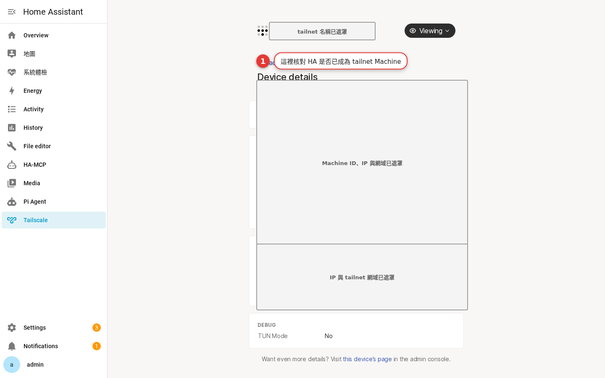

加入 tailnet
用 Tailscale App 的 Web UI 讓這台 Home Assistant 成為 tailnet 的一員，再到管理主控台確認它出現。 本章用可驗證、可回復的節奏帶你完成一件事；先保留私有存取，避免把 Home Assistant 直接曝露在網際網路。
為什麼現在要做這件事
授權只做一次，確認要做兩次。官方 App 文件的起手式是開啟 Tailscale App 的 Web UI，完成帳號授權，然後回到 App 日誌確認結果。請在自己信任的桌機或筆電瀏覽器做這一步，不要把授權連結貼到公開聊天室。
先懂三個名詞
tailnet 是你的 Tailscale 私有網路；Machine 是加入其中的一台裝置；Home Assistant App 則是由 Supervisor 管理、可在 HA 的 Apps 頁面開啟與設定的 Tailscale 服務。先分清這三層，後面的按鈕才不會按錯地方。
| 層級 | 負責什麼 | 本章怎麼驗證 |
|---|---|---|
| Tailscale 管理主控台 | 帳號、Machines、路由與 policy | Machines 中找得到 HA |
| HA Tailscale App | 在 HA 主機上運行 Tailscale | 狀態正常、日誌無阻斷錯誤 |
| Home Assistant | 登入、儀表板與管理者權限 | 以個人帳號正常登入 |
動手做：安全地完成本章
先記錄目前狀態
在 Home Assistant 左側進入 設定 → Apps，找到 Tailscale；若畫面用舊名稱，可能顯示 Add-ons。記下它是否運行，先不要改未使用的進階選項。
開啟需要的入口
依本章目標查看 App 的 Info、Configuration、Log 或 Web UI。Web UI 的帳號授權只在信任的個人裝置完成。
到管理主控台交叉核對
開啟 Tailscale admin console 的 Machines 頁面，確認 Home Assistant 對應的 Machine、最後連線狀態與功能標記；不要用截圖中的名稱或 IP 當自己的值。
從另一台裝置測試
拿一台已登入同一 tailnet 的手機或筆電，完成一次本章目標的存取測試。成功後記下測試時間與裝置，方便日後排錯。

選項怎麼選才不會擴大風險
先選最小可行做法，再逐步擴充。若你只是要回家看儀表板，私有 tailnet 存取通常比公開入口更容易控制；若你需要 LAN 子網，先列出一個網段與明確用途，不要一次宣告所有網路。
| 需求 | 建議起點 | 暫時不要做 |
|---|---|---|
| 遠端看 HA | 已登入 tailnet 的裝置私有存取 | 公開埠口與不必要的公開分享 |
| 管理設備 | Machines 清單與個人帳號 | 共用管理員帳密 |
| 存取家中 LAN | 單一已核准 subnet route | 未盤點就宣告多段子網 |
完成前的安全檢查
檢查登入 Tailscale 的帳號是否正確、Home Assistant 是否仍以獨立個人帳號管理、以及 Machines 清單有沒有陌生或已淘汰的裝置。權限設計採最小權限：需要連 HA 的人才取得路徑，需要管理 tailnet 的人才有管理主控台權限。
用兩個網路情境驗收
家中網路
在本地 LAN 開啟 HA，確認既有帳號與儀表板沒有因本章設定受到影響。
不同網路
讓測試手機改用行動網路或另一個安全網路，先確認 Tailscale 已連線，再完成一次 HA 存取。若本章是路由設定，僅測試你有權管理的目標。
記錄結果
記下成功／失敗、使用的裝置與時間。這比日後只記得「以前可以」更容易定位問題。
停在安全邊界
本教程不包含 exit node、DNS override 或公開 Funnel 設定；沒有需求就保持停用。
把這次設定留下可交接的記錄
網路設定最怕「當時能用，但沒人記得為什麼」。完成本章後，請在自己的密碼管理器或案場維護文件記下日期、操作者、目的、變更前後狀態與驗證裝置。記錄不是要保存密碼、auth key 或完整私有網段；這些機密應留在受控的祕密管理工具，文件只放能讓下一位維護者理解決策的描述。
例如可以寫：「2026-08-19，由管理者確認 Home Assistant Machine 仍在指定 tailnet；以受管理筆電在非家用網路測試私有存取成功。」若是 subnet router，再記下「僅宣告已核准的單一 LAN CIDR，且由管理主控台核准」，不要把住址、客戶姓名、完整 Tailscale 網域或裝置識別碼寫入公開 repo。這樣在手機遺失、換路由器、App 更新或管理權交接時，才能判斷要回復哪一層。
| 該記下 | 不應放進公開文件 | 下次誰會用到 |
|---|---|---|
| 變更目的、日期、驗證結果 | 帳密、auth key、OAuth 授權連結 | HA 維護者 |
| Machine 的用途與擁有者角色 | 完整 tailnet 網域與私有 IP | Tailscale 管理員 |
| 核准哪一個「用途明確」的子網 | 未遮罩 CIDR、掃描結果、住址 | 網路維護者 |
常見問題先這樣排
- 找不到 Apps：確認你的 HA 安裝方式是否由 Supervisor 管理；Container/Core 不能照本教程的 App 路徑操作。
- Machines 沒有 HA：回 App Web UI 完成授權，然後查看 App 日誌，而不是反覆重裝。
- 可以看 Machines 但打不開 HA：先確認客戶端已登入同一 tailnet，再檢查 HA 的登入帳號與網址。
- 路由看起來存在但 LAN 不通：確認該 route 已在 Machines 的 route settings 核准；再以正確 CIDR 與有權限的目標測試。
- 設定後變得不確定：回到上一個已知可用狀態，保留日誌與變更記錄，再一次只改一項。
FAQ
我需要公開路由器埠口嗎？
Tailscale 會取代 Home Assistant 登入嗎？
看到舊名稱 Add-on 怎麼辦？
可以順便設定 exit node 或 DNS override 嗎？
官方來源與版本提示
本文以 Home Assistant Community App: Tailscale 文件與 Tailscale Docs為準。介面文字會隨 App 與管理主控台版本調整；遇到名稱不同時，優先依畫面與官方文件操作。